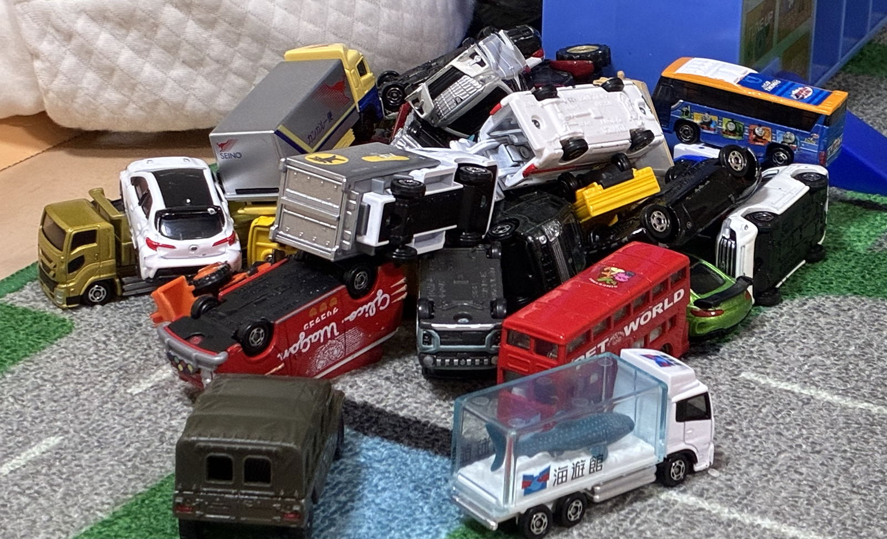

Futaトミカコレクション
THE COLLECTION
コレクション
登録状況を読み込み中
家族の登録状況をクラウドから取得しています。少しお待ちください。
カードをタップすると所持数が増えます。家族の変更は数秒で同期されます。公開URLを知る人は誰でも閲覧・編集できます。

THE COLLECTION
登録状況を読み込み中
家族の登録状況をクラウドから取得しています。少しお待ちください。
カードをタップすると所持数が増えます。家族の変更は数秒で同期されます。公開URLを知る人は誰でも閲覧・編集できます。